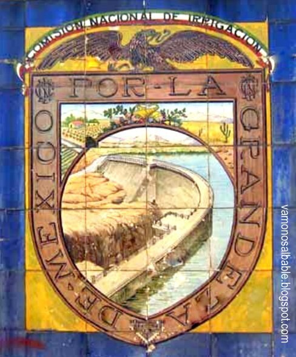
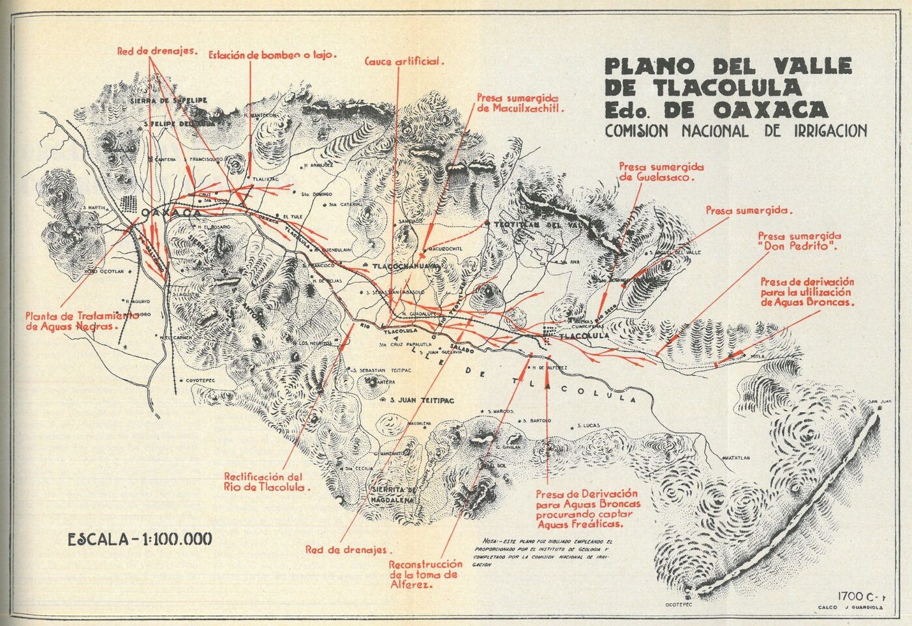
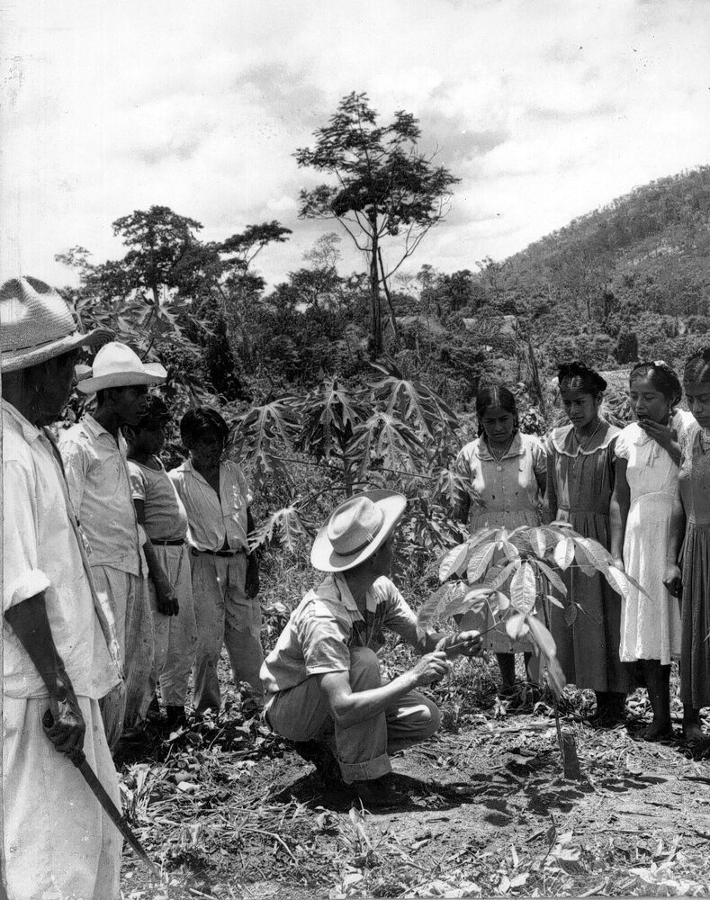
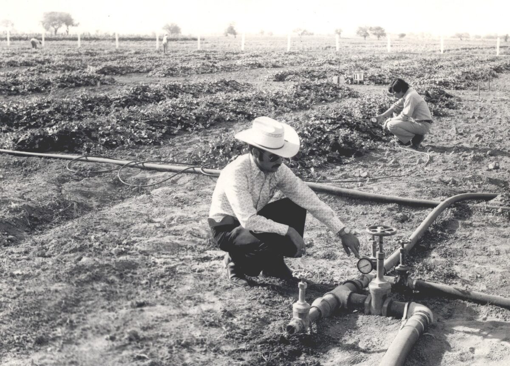
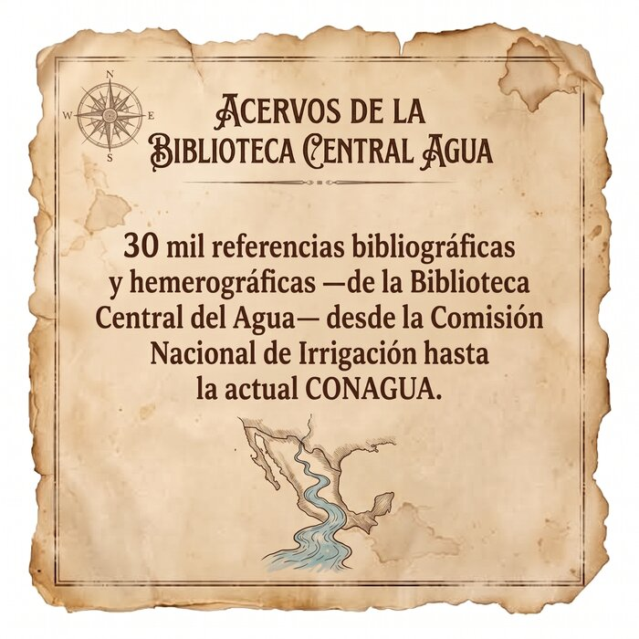
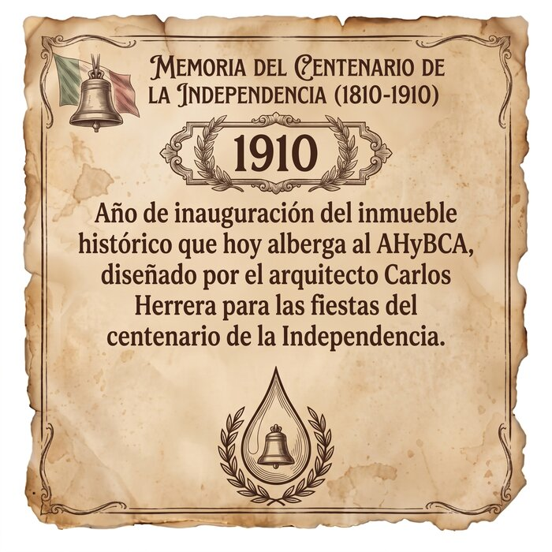
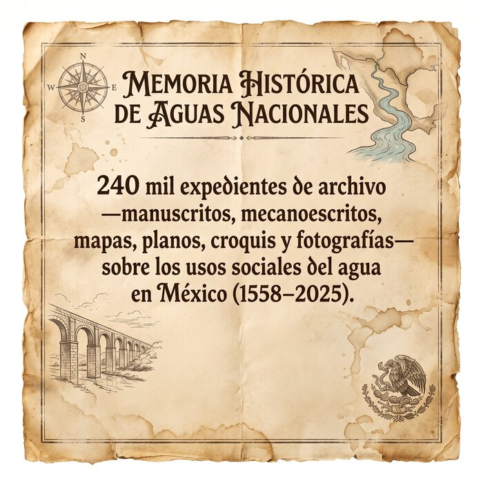
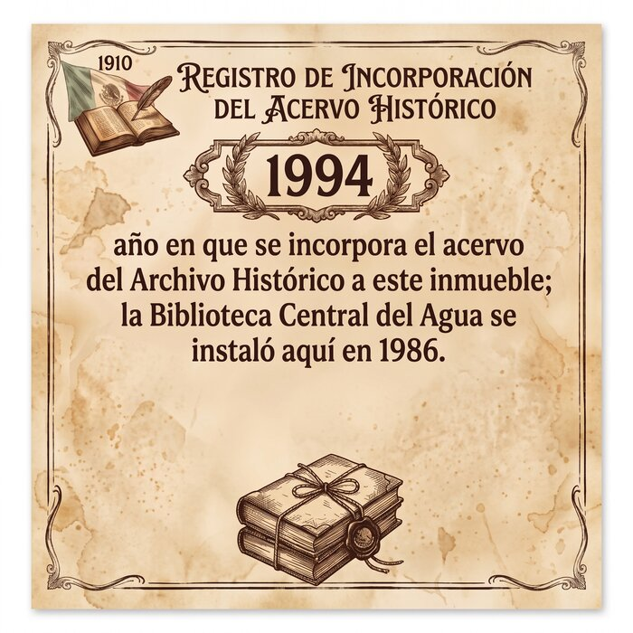
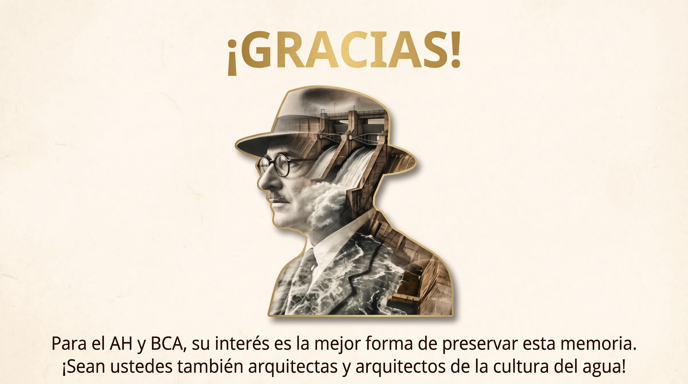

Entre ríos y cuencas, de generación en generación
A 100 años de la Comisión Nacional de Irrigación, el Archivo Histórico y Biblioteca Central del Agua conmemora un siglo de gestión, infraestructura y desarrollo hídrico en el país con una exposición fotográfica y un ciclo de pláticas semanales sobre la trayectoria y los retos institucionales en la transformación de la gestión del agua.
Cien años de historia, contados desde el archivo
El Archivo Histórico y Biblioteca Central del Agua (AHyBCA) de la CONAGUA, en el marco de El Almanaque —festival organizado por la Red de Bibliotecas y Archivos del Centro Histórico de la Ciudad de México—, conmemora el centenario de la Comisión Nacional de Irrigación con este encuentro. El objetivo es visibilizar y reconocer un siglo de gestión, infraestructura y desarrollo hídrico en el país, a través de una exposición fotográfica y un ciclo de pláticas semanales sobre la trayectoria y los retos institucionales en la transformación de la gestión del agua, con base en el acervo del AHyBCA.
Ese acervo resguarda la memoria histórica sobre la gestión, administración y manejo de los recursos hídricos e hidráulicos de México, generada por la CONAGUA y las instituciones que le antecedieron, con una temporalidad de 1558 a 2015: más de 240 mil expedientes organizados en siete fondos documentales y más de 30 mil referencias bibliográficas y hemerográficas en seis colecciones, resguardadas en un inmueble emblemático de finales del siglo XIX que albergó a la extinta Comisión Nacional de Irrigación, la SRH y la SARH.

Apertura del viernes 23 de octubre
Bienvenida, ciclo de pláticas e inauguración de la exposición
Sala de Consulta del AHyBCA — 15:30 a 17:30 horas.
Bienvenida
Lic. Anel Oceguera Vergara, Subgerenta de Relaciones Interinstitucionales y Cultura del Agua (CONAGUA), y representante de la Red de Bibliotecas y Archivos del Centro Histórico de la Ciudad de México. Indicaciones de protección civil.
Ciclo de pláticas
- “De los canales de tierra a los archivos digitales: cien años de política hídrica en México, 1926–2026” — Olga Manuel Castillo (20 min)
- “El origen de la infraestructura hidráulica: la Comisión Nacional de Irrigación, 1926–1946” — José Guadalupe Rangel Mandujano (20 min)
- “Conociendo el patrimonio documental del agua: fondos y colecciones del AHyBCA” — Jessica Erisbeth Ríos Alvarado / José Roberto Benítez Camacho (20 min)
Exposición fotográfica
Corte de listón inaugural, explicación de la exposición y foto grupal.
Conclusiones y cierre
Mtra. Olga Manuel Castillo, Jefa de Proyecto y Coordinadora del AHyBCA.
Ciclo de pláticas semanales
Tras la apertura del 23 de octubre, el ciclo continúa cada viernes en la Sala de Consulta hasta cerrar la conmemoración el 18 de diciembre.
“La Comisión del río del Papaloapan: política de desarrollo por cuencas, 1946–1984” — Jessica Erisbeth Ríos Alvarado (30 min) · “Del surco a la gota: evolución de los sistemas de riego en México” — Eva Olivo Zavala (30 min)
“Reconocimiento Memoria del Mundo de la UNESCO” — Olga Manuel Castillo (30 min) · “Los inicios de la cooperación hídrica internacional en la CNI: transferencia tecnológica, fortalecimiento de capacidades y negociación transfronteriza” — Nohemí Flores González (30 min)
“De la CNI a la Conagua: evolución de las revistas de divulgación, 1926–2025” — José Roberto Benítez Camacho (30 min) · “Mujeres y gestión hídrica: un análisis hemerográfico del Boletín Archivo Histórico del Agua, 1994–2008” — Jesús Gatica Santiago (30 min)
“Organización y conservación de documentos” — Jessica Erisbeth Ríos Alvarado / José Roberto Benítez Camacho (30 min) · Taller de conservación de documentos históricos — Jessica Erisbeth Ríos Alvarado (1:30 h)
“La huella de Adolfo Orive Alba en la CNI y SRH” — María Gabriela Vilchis Bernal · Reseña de libro — ponente por definir
“Las raíces del agua: importancia de las muestras de suelo en los proyectos de la Comisión Nacional de Irrigación, 1926–1946” — Alejandro Jiménez Serna · “Patrimonio de la investigación: resguardo de tesis en la Biblioteca Central del Agua” — Alejandro Jiménez Serna
“Los expedientes hablan: los aprovechamientos del Río Magdalena, siglos XVII–XIX” — José Guadalupe Rangel Mandujano · Información sobre los servicios que ofrece el AHyBCA — Olga Manuel Castillo
“Custodia de la memoria: logros del AHyBCA sobre la CNI” — Olga Manuel Castillo · “Memoria y Cultura del Agua: reflexiones al cierre del ciclo” — Anel Oceguera Vergara
Un adelanto de la exposición



Lo que resguardan el Archivo y la Biblioteca




Fondos documentales del Archivo Histórico
Colecciones de la Biblioteca Central del Agua
Reserva tu lugar
El cupo es limitado a 30 personas por sesión. Regístrate a través del formulario oficial para confirmar tu asistencia a la apertura del 23 de octubre o a cualquiera de las pláticas semanales.
Ir al formulario de registroArchivo Histórico y Biblioteca Central del Agua
Sala de Consulta
Calle de Balderas No. 94, Colonia Centro,
Alcaldía Cuauhtémoc, C.P. 06040, Ciudad de México.
Tel.: 55 5174 4000 ext. 2813 · 9:00 a 14:00 h
olga.manuel@conagua.gob.mx
